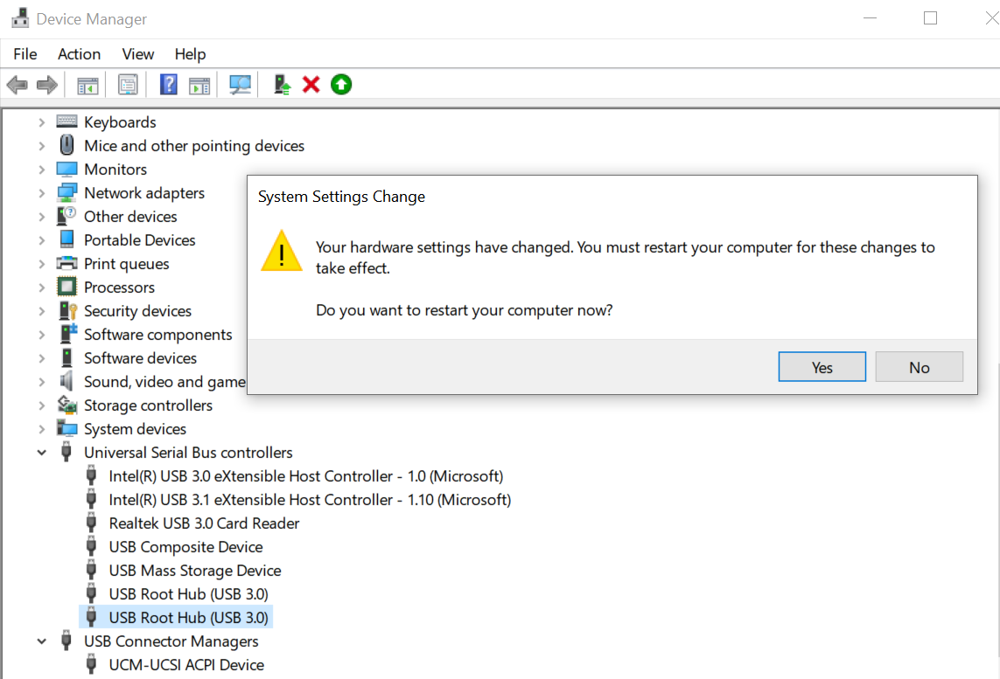

Working with device drivers from a managed environment like .NET can be messy and sometimes not possible without making a call to unmanaged native code APIs. In this post, I will show how to enable and disable USB disk drive in C# using ManagementObjectSearcher and Native setupapi.
Before a device can be enabled or disable we need to know the device GUID and its instance path.
Getting device GUID and instance path
GUID(Globally Unique Identifier) is also known as UUID(Universally Unique Identifier) is a 128-bit integer number used to identify resources. Every device has hard-coded GUID but to get the GUID from C# we can query the device group using ManagementObjectSearcher. To use the ManagementObjectSearcher class you will need to add the System.Management reference to the project.
In our case we need to get the detail of disk drive hence we will query one of the Win32 class DiskDrive, CIM_LogicalDevice or CIM_LogicalElement. Querying DiskDrive will only give information on currently enabled Disk Drive but we need to get all drives on the system including those with error, disabled, mounted e.t.c. hence we use the CIM_LogicalDevice class which is the supertype of the DiskDrive class.
Add the following namespaces in your code.
using System;
using System.Collections.Generic;
using System.Management;
Create the static method to get all known logical drive from the system
static List<ManagementBaseObject> GetLogicalDevices()
{
List<ManagementBaseObject> devices = new List<ManagementBaseObject>();
ManagementObjectCollection collection;
using (var searcher = new ManagementObjectSearcher("root\\CIMV2",
@"Select * From CIM_LogicalDevice"))
collection = searcher.Get();
foreach (var device in collection)
{
devices.Add(device);
}
collection.Dispose();
return devices;
}
Note the class we choose to query in the line @"Select * From CIM_LogicalDevice")) you can change from CIM_LogicalDevice to other device class you wish to get in case you want to fetch detail of other kind of devices e.g to get all known keyboard you can change it to CIM_Keyboard, @"Select * From CIM_Keyboard")). You can see all the list of device classes at https://docs.microsoft.com/en-gb/windows/win32/cimwin32prov/cim-wmi-provider.
Iterating over our devices to get GUIDs and instance paths
To get the properties of the returned devices we need to use the GetPropertyValue method of ManagementBaseObject to extract the value of a property of the device. The device classes have different properties hence the doc should be consulted before trying to get property value from a ManagementBaseObject. In our case, we need the properties of CIM_LogicalDevice specifically DeviceID which holds the instance path and ClassGuid which holds the GUID.
var usbDevices = GetLogicalDevices();
foreach (var usbDevice in usbDevices)
{
Console.WriteLine("Name: {0}, Status: {1}, Instance Path: {2}, GUID: {3}",
usbDevice.GetPropertyValue("Caption"),
usbDevice.GetPropertyValue("Status"),
usbDevice.GetPropertyValue("DeviceID"),
usbDevice.GetPropertyValue("ClassGuid"));
}
Disabling and Enabling the drive using it GUID and Instance path
After getting the GUID and Instance path of the device to be enabled or disabled we can make a call to the Win32 unmanaged SetupAPI to interact with the device drivers.
The following native setup API methods are required to enable and disable a device:
public static extern bool SetupDiEnumDeviceInfo(SafeDeviceInfoSetHandle deviceInfoSet, int memberIndex, ref DeviceInfoData deviceInfoData);
public static extern bool SetupDiCallClassInstaller(DiFunction installFunction, SafeDeviceInfoSetHandle deviceInfoSet, [In()] ref DeviceInfoData deviceInfoData);
public static extern SafeDeviceInfoSetHandle SetupDiGetClassDevs([In()] ref Guid classGuid, [MarshalAs(UnmanagedType.LPWStr)] string enumerator, IntPtr hwndParent, SetupDiGetClassDevsFlags flags);
public static extern bool SetupDiGetDeviceInstanceId(IntPtr DeviceInfoSet, ref DeviceInfoData did, [MarshalAs(UnmanagedType.LPTStr)] StringBuilder DeviceInstanceId, int DeviceInstanceIdSize, out int RequiredSize);
public static extern bool SetupDiDestroyDeviceInfoList(IntPtr deviceInfoSet);
public static extern bool SetupDiSetClassInstallParams(SafeDeviceInfoSetHandle deviceInfoSet, [In()] ref DeviceInfoData deviceInfoData, [In()] ref PropertyChangeParameters classInstallParams, int classInstallParamsSize);
To enable/disable a device the GUID is used to fetch SafeDeviceInfoSetHandle of the device from the SetupDiGetClassDevs native method.
Since the GUID is for a group of devices i.e more than one device will have the GUID so far the devices fall under the same device class. The native method GetDeviceInfoData is used to get all the devices under the GUID.
The instance id will determine the actual device we want to change its state, the GetIndexOfInstance is invoked with diSetHandle, the array of GetDeviceInfoData and the instance ID to get the index of the device in the list of all the devices returned by the GetDeviceInfoData method.
public static void SetDeviceEnabled(Guid classGuid, string instanceId, bool enable)
{
SafeDeviceInfoSetHandle diSetHandle = null;
try
{
diSetHandle = NativeMethods.SetupDiGetClassDevs(ref classGuid, null,
IntPtr.Zero, SetupDiGetClassDevsFlags.Present);
DeviceInfoData[] diData = GetDeviceInfoData(diSetHandle);
int index = GetIndexOfInstance(diSetHandle, diData, instanceId);
EnableDevice(diSetHandle, diData[index], enable);
}
finally
{
if (diSetHandle != null)
{
if (diSetHandle.IsClosed == false)
{
diSetHandle.Close();
}
diSetHandle.Dispose();
}
}
}
The SafeDeviceInfoSetHandle, the array of DeviceInfoData and the condition(true/false) is sent into our EnableDevice method to change the device state. The EnableDevice method is implemented below. We make a call on the native method in setupdi SetupDiSetClassInstallParams to change the state of the device
private static void EnableDevice(SafeDeviceInfoSetHandle handle,
DeviceInfoData diData, bool enable)
{
PropertyChangeParameters @params = new PropertyChangeParameters();
@params.Size = 8;
@params.DiFunction = DiFunction.PropertyChange;
@params.Scope = Scopes.Global;
if (enable)
{
@params.StateChange = StateChangeAction.Enable;
}
else
{
@params.StateChange = StateChangeAction.Disable;
}
bool result = NativeMethods.SetupDiSetClassInstallParams(handle, ref diData,
ref @params, Marshal.SizeOf(@params));
if (result == false) throw new Win32Exception();
result = NativeMethods.SetupDiCallClassInstaller(DiFunction.PropertyChange,
handle, ref diData);
if (result == false)
{
int err = Marshal.GetLastWin32Error();
if (err == (int)SetupApiError.NotDisableable)
throw new ArgumentException("Device can't be disabled (programmatically).");
else if (err >= (int)SetupApiError.NoAssociatedClass &&
err <= (int)SetupApiError.OnlyValidateViaAuthenticode)
throw new Win32Exception("SetupAPI error: " + ((SetupApiError)err).ToString());
else
throw new Win32Exception();
}
}
}
The SETUPAPI native method full source code is at https://github.com/thedarkprojects/devjammer/blob/master/NativeSetupDiLib.cs the file can be placed in your project without the need for extra dependency.
The EnableDevice method can be called with the GUID and Instance id gotten from ManagementObjectSearcher query above and our boolean to enable or disable the drive. E.g. to disable an already active disk drive connect with USB (external hard disk, card reader, MTP Device), we can check the list of Logical Drive and disable the drive that contains USB and is enabled
var usbDevices = GetLogicalDevices();
foreach (var usbDevice in usbDevices)
{
if (usbDevice.GetPropertyValue("DeviceID").ToString().Contains("USB") &&
usbDevice.GetPropertyValue("Status").ToString().Contains("OK") )
{
Guid mouseGuid = new Guid(usbDevice.GetPropertyValue("ClassGuid").ToString());
string instancePath = usbDevice.GetPropertyValue("DeviceID").ToString();
DeviceHelper.SetDeviceEnabled(mouseGuid, instancePath, true)
}
}
If the state of the device does not change en exception is thrown. If no exception occurs in the method the state of the device has changed successfully.
When building the project ensure CPU target corresponds to the CPU architecture of your system as the SETUPAPI is conscious of CPU architecture. The functionalities will not work on an x86 system if the build target is x64 and it won’t work on x64 if the target build is x86. If you are using a 64bit system ensure your CPU target build is x64 and if your system is 32bit ensure your build target is x86. Also, you have to run the app in Administrator Mode for it to work.
Applications
The ManagementObjectSearcher query can be used to get pretty much any or all types of devices on the Windows system. With a careful combination of the ManagementObjectSearcher queries and the NativeSetupDiLib you can implement a custom Device control application that can block access to system e.g blocking the USB port by listening for device changes and if not allowed in your application you immediately disable the device connected in the USB port. It can also be used to bypass device control by anti-virus programs by continual enabling of a device if the dev control program disable it (be careful).
If you are choosing to perform the device enabling and disabling from command line by writing a system script (batch/powershell) you can check out the devcon tool provided by Microsoft which also uses the SETUP APIs. For the devcon program to work ensure you download the CPU architecture version for your system e.g. devcon-x64 if your PC is 64bit.